Olá, meu nome é Gabriel e estou fazendo esse site para fazer como se fosse uma "retrospectiva" do meu namoro com o amor da minha vida, a menina dessa foto
Veja aqui nossos vídeosNossas fotos
Registros de alguns dos nossos momentos
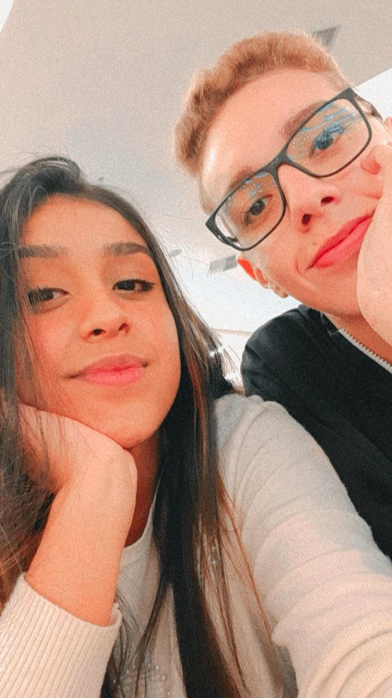
Nossa primeira foto ❤️
Essa foi a nossa primeira foto, tiramos essa foto no dia 14 de maio de 2021, esse dia foi a primeira vez que nos vimos pessoalmente, nesse nosso primeiro encontro fomos ao shopping Itaquera, comemos, conversamos e nos divertimos demais!
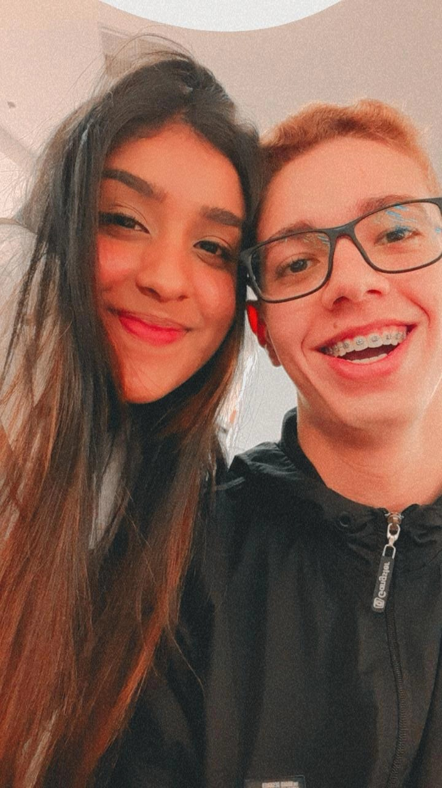
O grande dia 😍
Por que o grande dia? Pelo fato dessa foto ser um registro do dia 11 de junho de 2021, a segunda vez que nos vimo, o dia que eu a pedi em namoro. No nosso segundo encontro fomos ao shopping Itaquera, conversamos, comemos e assistimos ao recém-lançado invocação do mal 3.
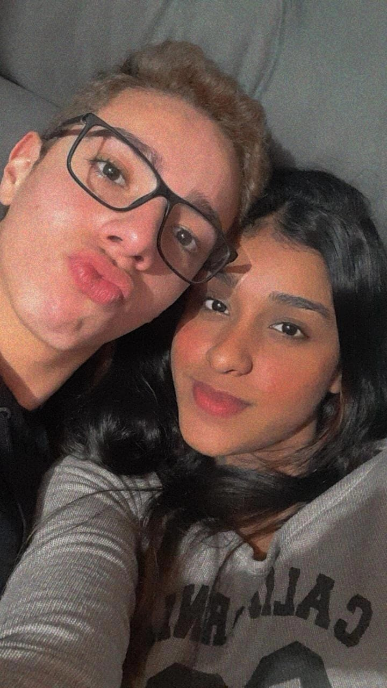
Conhecendo os sogros 😨
Essa foto registra a primeira vez que fui à casa dela, fui lá conhecer os pais dela e onde ela morava, foi um dia muito bom, fui muito bem recebido. E nesse dia ela me entregou uma cartinha muito linda, que me emocionou muito.
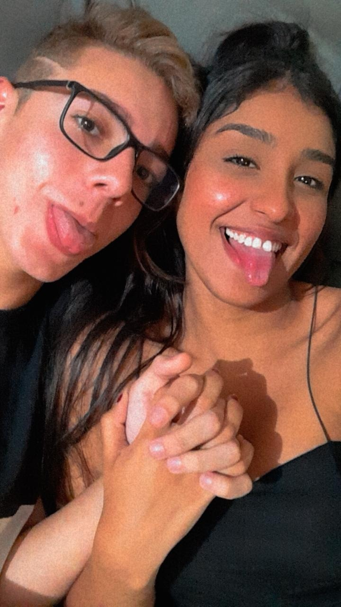
Um dia lindo ao lado dela 💕
Não me lembro muito bem do que fizemos nesse dia, mas sei que foi a segunda vez que fui à casa dela e se eu vejo ela é certeza de um dia incrível, engraçado e feliz...
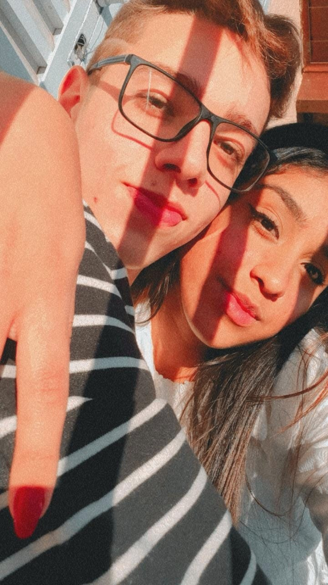
Ela conhecendo os sogros 😨
Essa foto é de um dos dias mais felizes da minha vida, foi a primeira vez que ela veio na minha casa e eu estava muito ansioso por isso, mas deu tudo certo, acho que ela gostou dos meus pais. E depois de um tempo nós subimos para a porta do meu sótão e ficamos lá tirando foto, vendo o pôr do sol e aí eu entreguei a nossa aliança de namoro para ela e nesse dia eu também entreguei uma carta gigante para ela.
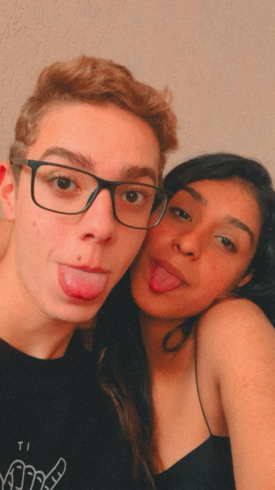
Dia maravilhoso 🥰
Eu não me lembro que fizemos nesse dia, mas eu te vi então já foi um dia alegre e se tem foto tenho que mostrar.

Mais um belo dia com ela 🤩
Essa é uma das fotos mais bonitas que temos juntos e nesse dia eu fui à casa dela e não faço ideia do que fizemos, mas sei que foi bom.
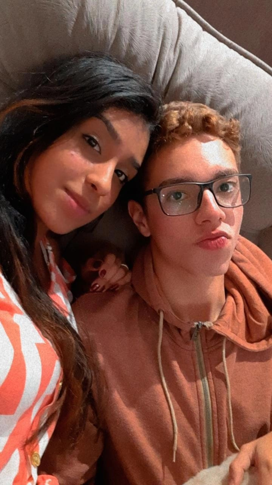
Na minha casa de novo 😁
Aqui se não me engano foi a segunda vez que ela veio na minha casa, lembro que ainda estava muito ansioso porque não sabia o que ela tinha achado dos meus pais e o que eles tinham achado dela, então eu ainda estava nervoso, mas sei que subimos para o meu quarto, ficamos deitados e assistindo até um certo momento.
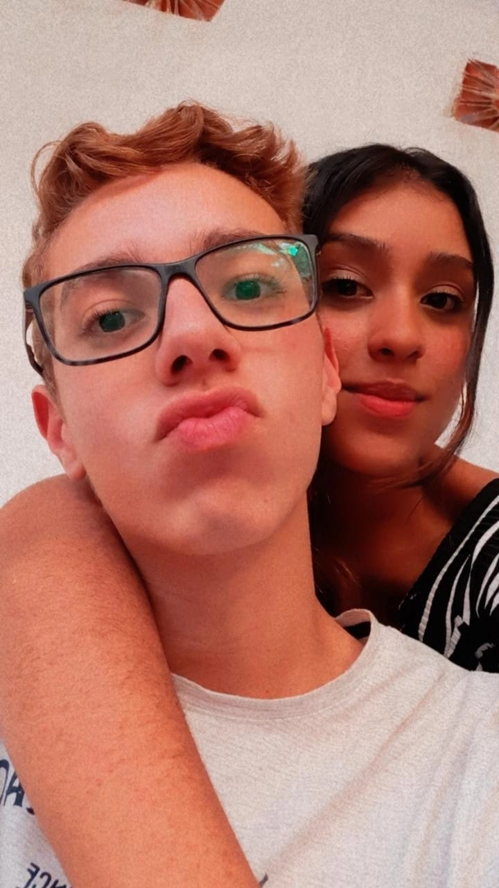
Dia de churras 😋
Nesse dia aqui teve um churrasco na casa dela, me diverti muito com a Mirian, com o Jonas, os pais dela e principalmente com ela, tiramos essa foto só para não passar em branco.
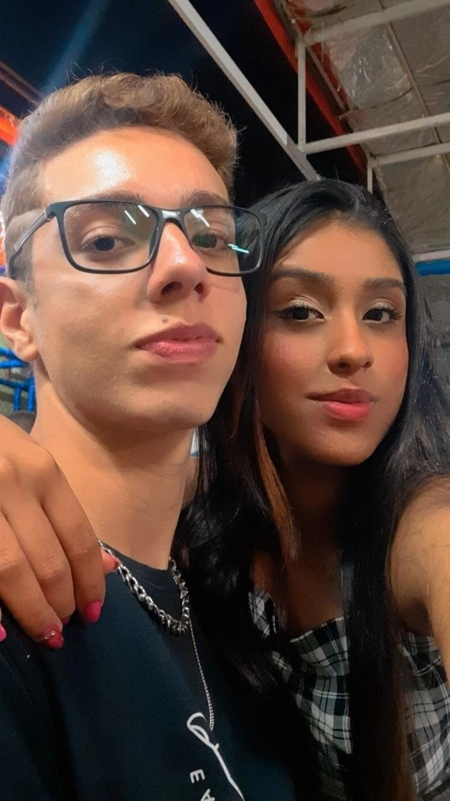
Dia de festa 🥳
Essa foi tirada na primeira festa que fui da família dela, pude conhecer a todos da família, me divertir muito, fiquei emburrado... e foi a primeira vez que eu vi a minha linda dançando, mesmo que por pouco tempo.
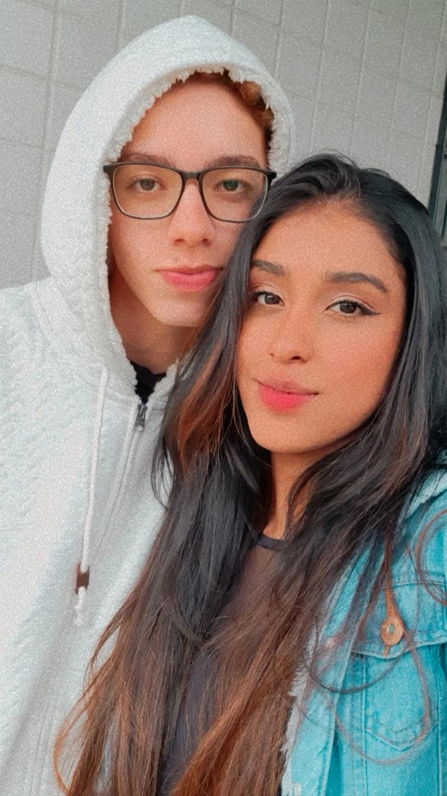
Mais um dia de festa 🥳
Essa foi tirada na primeira festa que fui da família dela, pude conhecer a todos da família, me divertir muito, fiquei emburrado... e foi a primeira vez que eu vi a minha linda dançando, mesmo que por pouco tempo.
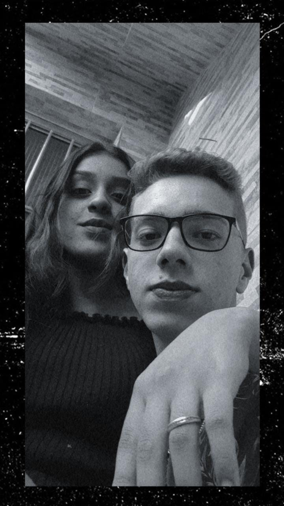
Foto linda demais 🥰
Não faço ideia do que fizemos nesse dia, sei que estávamos na casa dela, mas foi bom e essa foto é perfeita.
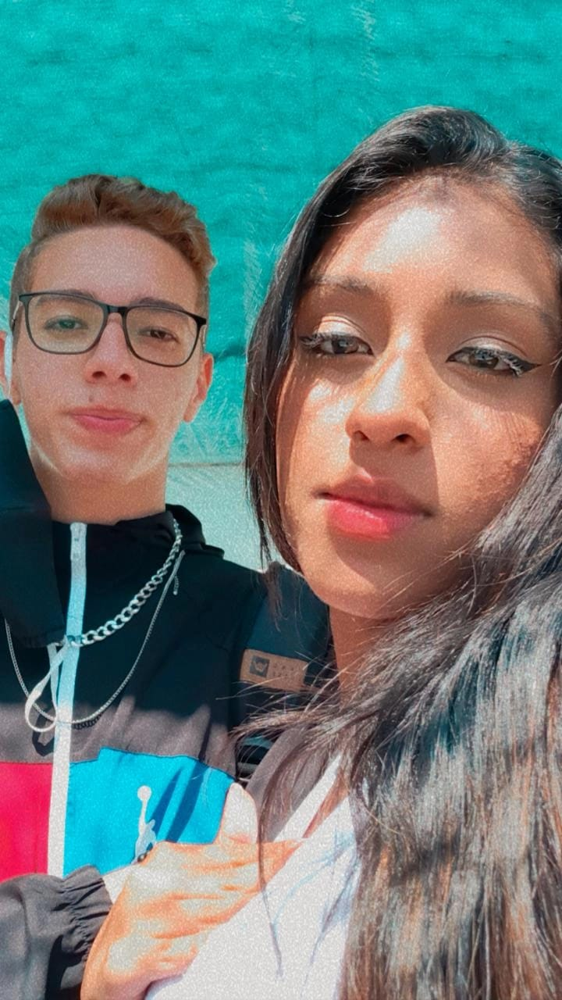
Fotinha na etec ❤️
Essa daqui é uma das poucas fotos que tiramos enquanto estávamos na etec, eu adoro essa foto, já ela...
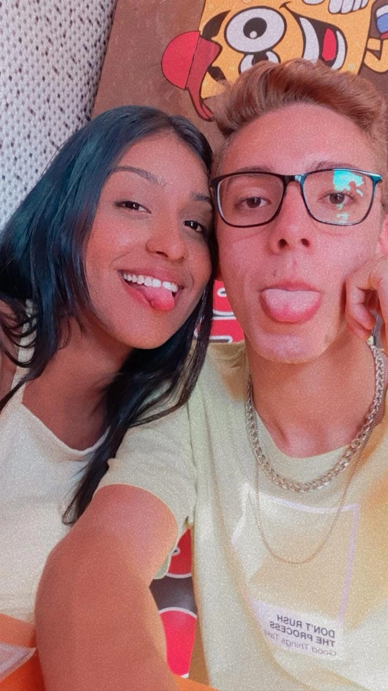
Primeira vez no point do pastel 😋
Nesse dia fomos em um lugar perto da casa dela onde vende pasteis maravilhosos, gastamos demais, comemos demais e rimos muito, além de eu ver a cena icônica dela tomando caldo de cana.
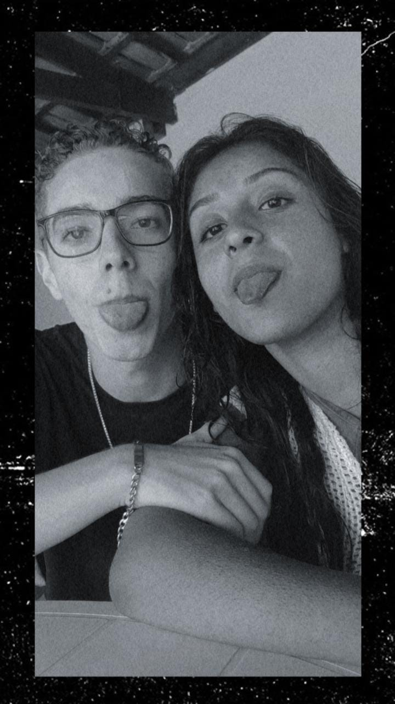
Dia de sítio 😁
Diazinho maravilhoso que passamos no sítio, tivemos que registrar esse momento porque ele foi bom demais em todos os sentidos.
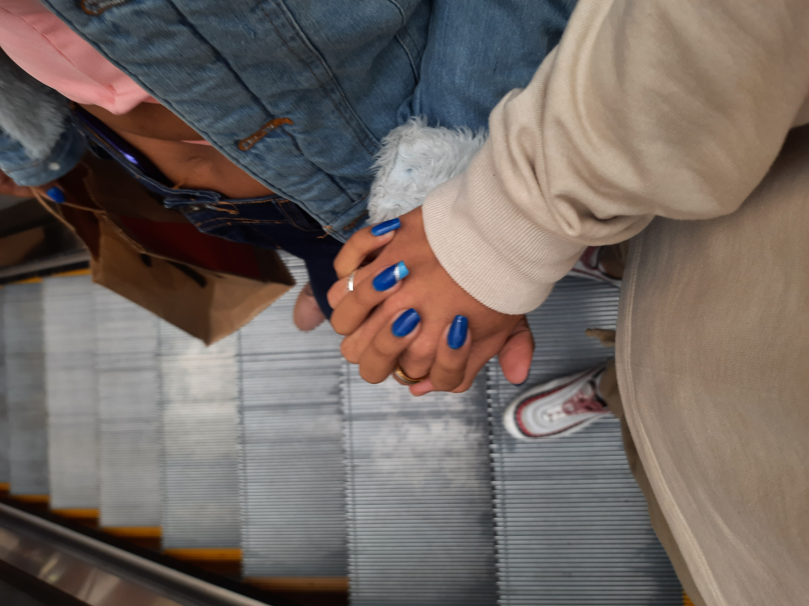
Dia de shopping 🥰
Essa foto aqui foi tirada na primeira vez que fomos no shopping em 2022, "assistimos" eternos, comemos um KFC top e depois tomamos um belo milk-shake, um dia perfeito. Eu gosto demais dessa foto porque é uma das únicas que temos de mãos dadas e eu amo ficar de mão dada com ela.
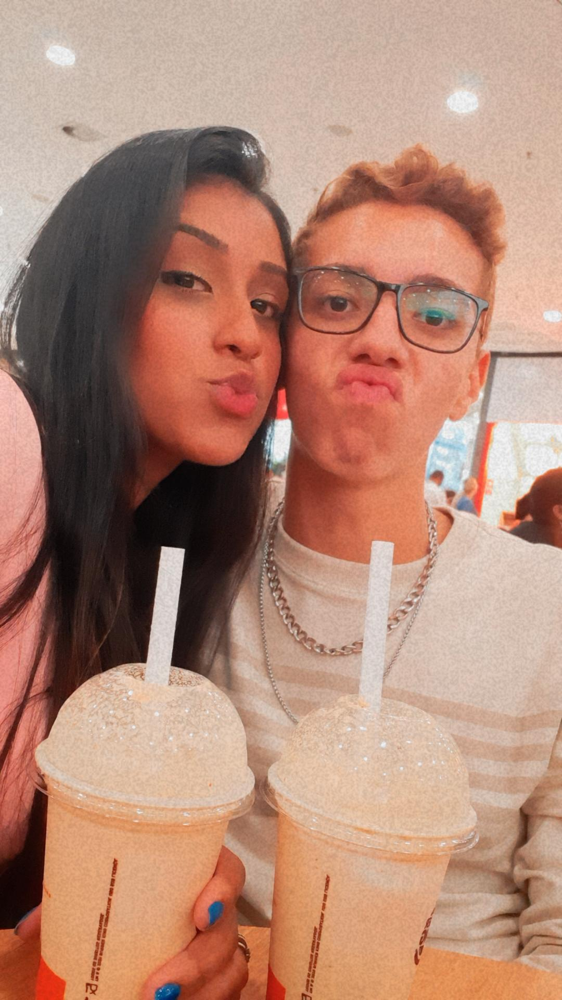
Dia de shopping 🥰
Essa foto foi tirada no mesmo dia em que a foto anterior e aqui estávamos tomando milk-shake, rindo e o meu cabelo todo bagunçado.
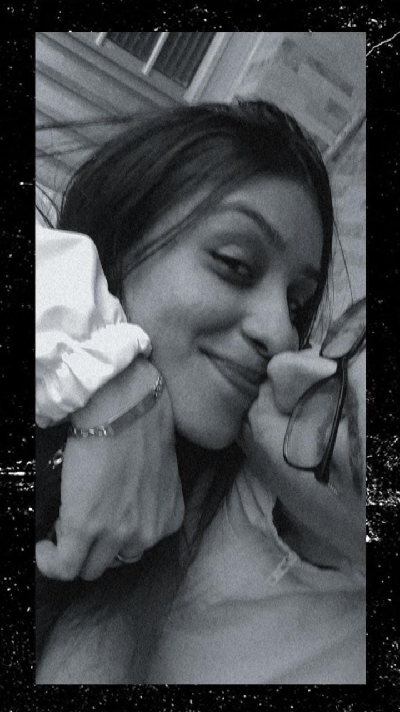
Amo essa foto 💕
Eu amo essa foto porque nela eu estou completamente agarrado no meu amor, eu queria sempre estar assim nela, beijando a melhor boca do mundo, abraçando ela, sentindo o cheiro dela e tudo mais.
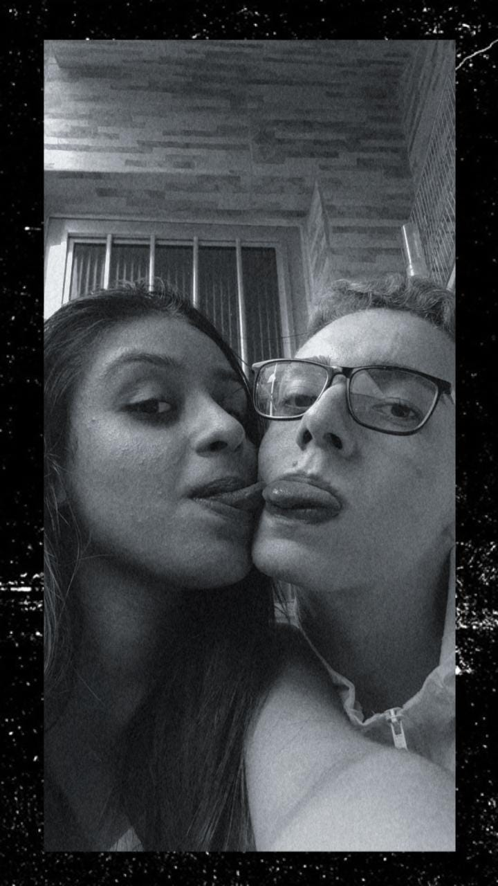
Apaixonado por essa foto ❤️
Sou completamente apaixonado por essa foto, pois ela me traz muita saudade da língua da morena mais linda do mundo e além de tudo me dá vontade de beijar.
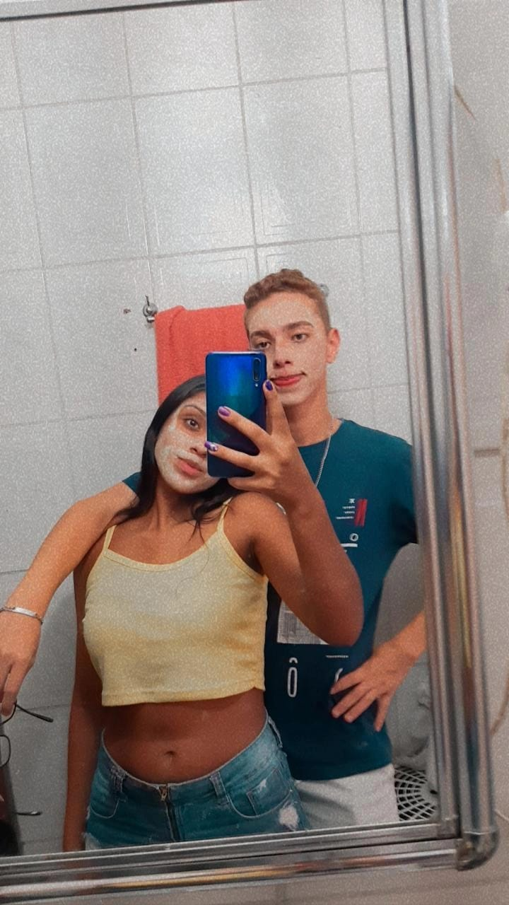
Skin care de casal 🤩
Esse dia aqui foi magnífico, nesse dia fizemos um skin care maravilhoso, ela foi tão cuidadosa comigo, me ensinou direitinho como ficar lindo igual ela e acho que deu certo, mas só por um momento, mas eu como sou muito criança brinquei muito, fiz ela rir demais e espero que ela tenha se divertido tanto quanto eu, porque eu me diverti demais da conta.
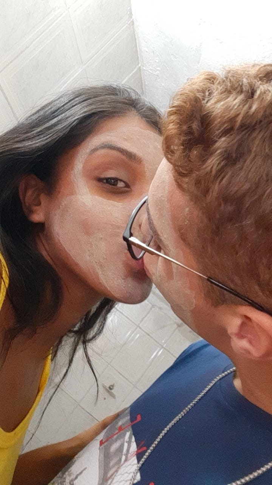
Skin care de casal 🤩
Essa daqui é mais uma foto do dia de skin care e como podemos ver estávamos lindos demais e como sempre eu dando um beijo nela.

Dia de pastel 😋
Aqui estávamos muito felizes porque estávamos no point do pastel só esperando para nos matarmos de comer e olha, comemos muito.
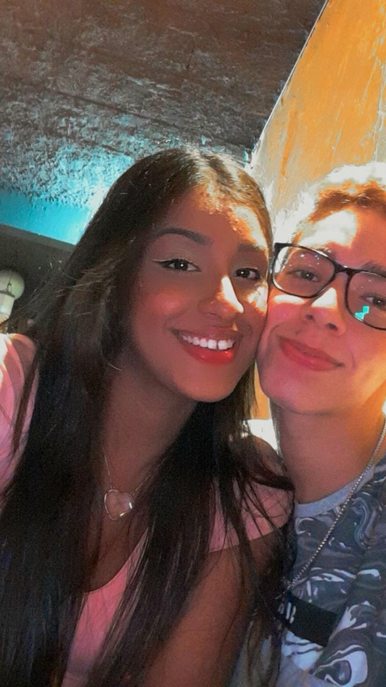
Festa da minha segunda família 🥰
Essa foto aqui deu um trabalho para sair..., mas nesse dia aqui ela conheceu a minha segunda família, eles amaram ela e espero que ela tenha gostado deles também, além de tudo ela subiu no palco, pegou o microfone e arrasou cantando, esse dia está marcado em mim e esse foi um dos dias em que ela estava mais bonita, lembro de cada detalhe dela, desde os brincos, delineado até o tênis.
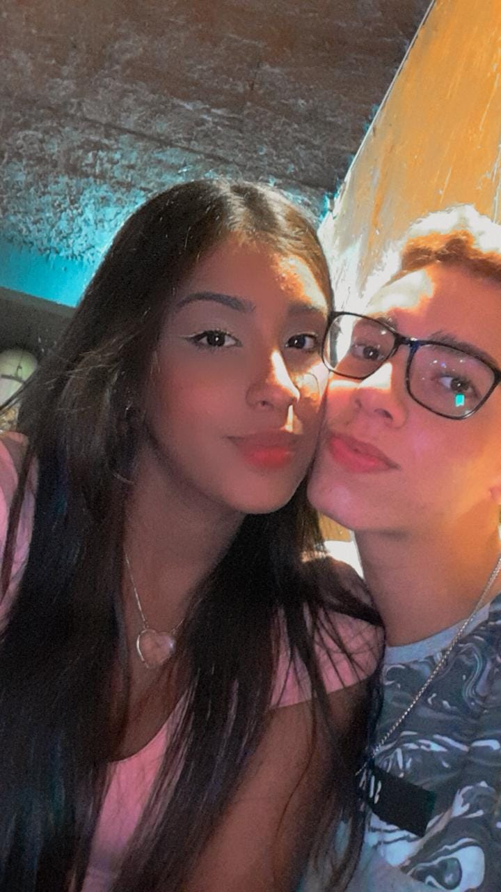
Foto linda demais 🥰
Coloquei mais uma foto desse dia porque sério, a menina estava gata demais meu Deus.
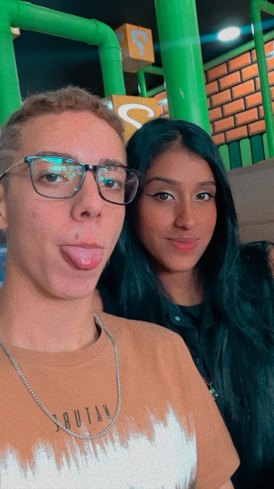
Charada Burguer 😋
Nossa o que falar desse dia? Fomos na charada burguer um dos lugares que vende os melhores hambúrgueres da cidade, minha nossa nesse dia nos matamos de comer, comemos batata frita, eu comi onion rings, comemos uns lanches monstruosos e de sobremesa foi uma taça maravilhosa de brownie. E além de tudo isso essa foto nessa é completamente perfeita, eu estava muito lindo, mas essa menina estava arrasando demais.
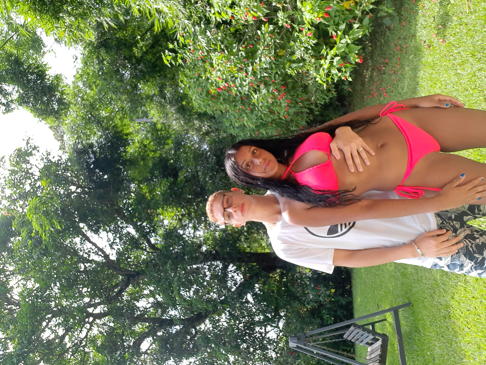
Mais um dia de sítio 😁
Nesse dia fomos no sítio pois a família dela tinha alugado, comemos demais nesse dia que meu deis, fiquei gordo e me diverti muito também, depois de tudo isso quando foi anoitecendo do nada decidiram dormir e aí foi uma loucura para saber se eu ia poder dormir ou não, mas no fim eu dormi e no dia seguinte foi a primeira vez que demos bom dia para o outro pessoalmente. E essa é uma das melhores fotos que temos de corpo todo juntos.
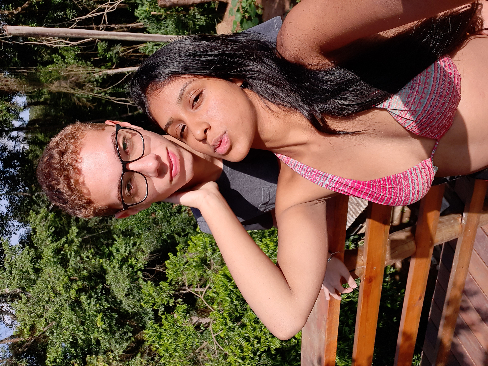
Outro dia de sítio 😁
Aqui foi quando minha família alugou um sítio então fomos e aí eu me diverti demais, comemos demais, ficamos muito emburrados com outros, de noite fizemos pizza juntos, nossa fizemos tanta coisa esse dia e eu amei demais.
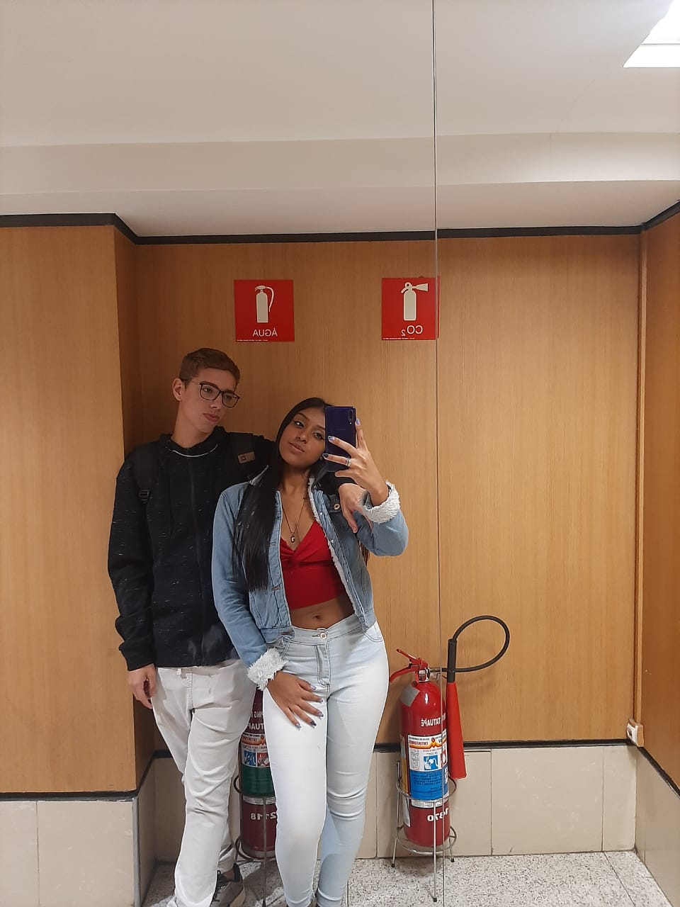
Shopping 🥰
Fomos ao shopping assistir Doutor Estranho no Multiverso da loucura, comemos uns lanches maravilhosos, comemos bata da Dipz, fomos na Americanas comprar coisas para comer na sala de cinema e chupamos sorvete do chiquinho. Porém ficamos decepcionados demais com a sala de cinema do Tatuapé, mas essa foto aqui está magnífica.
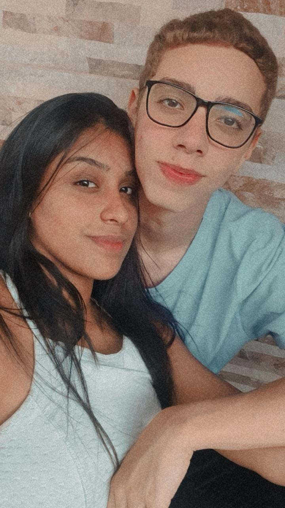
Dia normal ❤️
Esse dia aqui foi um dia normal, almoçamos e depois fomos para a escada ter nosso momento de casal.
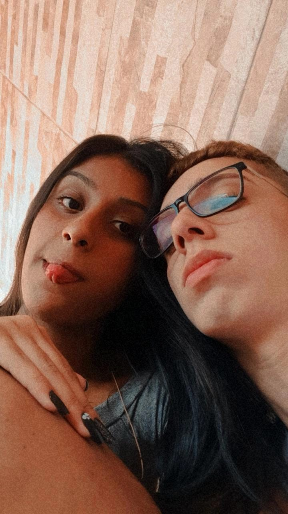
Dia abençoado 😍
Nesse dia eu fui para a casa dela bem cedo, pois ia ter algumas coisas na igreja e ela me convidou para ir e eu fui, foi muito bom ir lá e participar de mais algumas coisas da vida dela. Quando voltamos para a casa dela ficamos lá na escada e rimos demais, nos divertimos muito, ficamos conversando, fazendo graça, enfim, foi incrível.